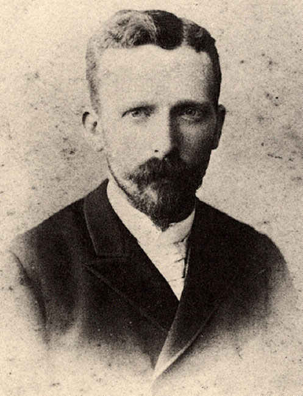
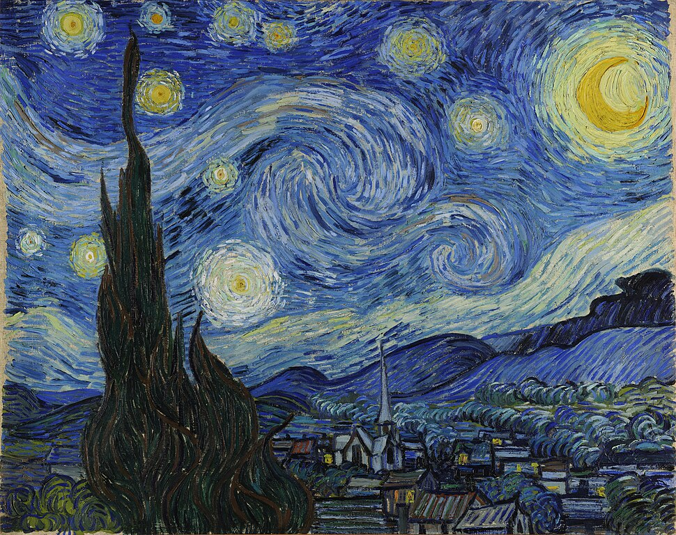

Винсент Ван Гог
(1853-1890) — нидерландский художник-постимпрессионист. Его жизнь была отмечена скитаниями по разным профессиям (продавец картин, учитель, проповедник), прежде чем он в зрелом возрасте обратился к живописи. Испытывая сильные эмоциональные потрясения и психическое расстройство, Ван Гог создал более 2100 работ за десять лет, включая около 870 картин, и известен своими яркими цветами и экспрессивной техникой. Его жизнь трагически оборвалась самоубийством в 1890 год.
Основные этапы жизни
Ранние годы и поиск себя
- Родился в 1853 году в Нидерландах в семье пастора
- В 16 лет начал работать в художественно-торговой фирме своего дяди, затем работал в Лондоне и Париже
- Позднее пытался стать учителем и миссионером, но потерпел неудачу, что привело его к глубокой депрессии.
Становление как художника
В 1880 году, в возрасте 27 лет, решил посвятить себя живописи и начал обучение, в том числе в Брюссельской академии
Период жизни в Нидерландах (до 1886 г.) ознаменован созданием картин на темы крестьянского труда, таких как «Едоки картофеля»
Париж и Прованс
В 1886 году переехал в Париж, где познакомился с импрессионистами. В этот период его манера письма изменилась, он начал использовать более яркие цвета и широкие мазки
В 1888 году переехал на юг Франции, в Арль, что стало самым плодотворным периодом его творчества
Последние годы
В последние годы жизни его психическое состояние ухудшилось, что отразилось в его работах появлением более трагических образо
Свои последние годы провел в лечебницах, где продолжал писать
В 1890 году, в возрасте 37 лет, покончил с собой
Ван Гог — постимпрессионист, известный своим экспрессивным стилем, характерным толстым слоем краски («импасто») и яркими цветами.
В своем творчестве он создавал многочисленные пейзажи, натюрморты, портреты и автопортреты.
Среди его знаменитых картин: «Звёздная ночь», «Подсолнухи», «Автопортрет с перевязанным ухом», «Едоки картофеля» и «Цветущие ветки миндаля»
Творчество и стиль
Эволюция стиля: Ван Гог начал с реализма и темных тонов, затем перешел к импрессионизму с более светлыми мазками, а в конце жизни стал постимпрессионистом
Техника: Его работы отличает техника импасто — нанесение густых мазков краски, создающих рельеф на холсте. Он часто использовал чистые цвета и иногда растушевывал краску пальцами
Инструменты: Художник экспериментировал с разными материалами, работая не только кистью и маслом, но и мелом, пером и чернилами
Вдохновение: В его творчестве прослеживается влияние японского искусства, что проявляется в использовании контуров и композиции
Знаменитые картины
«Звёздная ночь» (1889) — одна из самых известных работ, написанная в период пребывания в лечебнице
«Подсолнухи» (1888) — серия натюрмортов, известных своим солнечным светом и яркими красками
«Едоки картофеля» (1885) — одна из ранних работ, отличающаяся реализмом и темной цветовой гаммой
«Автопортрет с перевязанным ухом» (1889) — знаменитый автопортрет, отражающий его ментальное состояние
«Цветущие ветки миндаля» (1890) — картина, написанная для новорожденного племянника
«Спальня в Арле» (1888) — одна из версий, изображающая его комнату в желтом доме в Арле
«Пшеничное поле с воронами» (1890) — последняя картина, над которой он работал
Винсент Ван Гог не "не показывал" свои картины, а при жизни мало кто их оценивал.
Однако некоторые его работы, которые считаются утраченными или были известны лишь специалистам, могут подпадать под это описание.
Например:
"Уличная сцена на Монмартре": Была написана в 1887 году и находилась в частной коллекции почти 100 лет, не выставляясь на публике
Потерянные и уничтоженные картины: До наших дней не дошли около 85 работ, а другие были уничтожены в результате пожара во время Второй мировой войны
"Ночное кафе": Ван Гог считал эту картину своей самой уродливой из-за ненависти к цветам, людям и освещению
Особенности творчества Ван Гога
- Техника Импасто: Художник широко использовал технику импасто, нанося густые, рельефные мазки кистью или мастихином, иногда выдавливая краску прямо из тюбика. Это придавало его картинам текстуру и ощущение движения.
- Экспрессивный цвет и динамичные линии: После переезда во Францию его палитра стала намного ярче. Цвет в его работах отвечает за настроение и атмосферу, а волнообразные, прерывистые линии создают эффект "ожившей" картины.
- Влияние японской гравюры: Ван Гог вдохновлялся японской живописью, что помогло ему уйти от натурализма к более четкой и экспрессивной манере.
Эмоциональность и субъективность: Работы Ван Гога отражают его внутренний мир, страсти и душевные переживания. Он стремился передать свое видение мира, а не просто скопировать реальность
